One table, ten tasks. A simulated arm in , the our project uses. Each frame comes from a different task. When an starts, the table looks the same for all ten, and only the instruction says which task to do. Image: Liu et al. 2023, LIBERO, CC BY 4.0.
A robot arm stands at a table with a black bowl, a plate and a small stove on it. Someone types put the bowl on the plate. From that moment, several times a second, something has to decide how the arm and its gripper, the two-fingered hand at its end, move next. A , or VLA, is one that makes that decision. It looks at the camera images, reads the sentence and returns the next few motions.
What goes in and what comes out
Going in, there are usually two camera images. One comes from a camera looking at the table and one from a camera on the robot's wrist. Figure 1.1 shows what both cameras recorded during one run of put the bowl on the plate, the task from the opening paragraph.
0.0 sstart3.5 sgripper over the bowl6.5 sbowl lifted11.1 sbowl on the plateTable camera
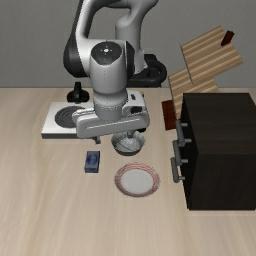
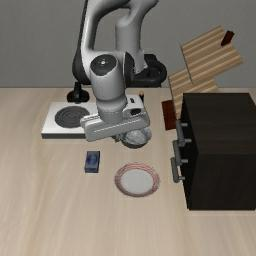
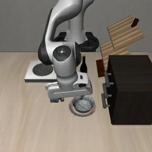
Wrist camera
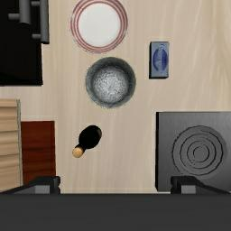
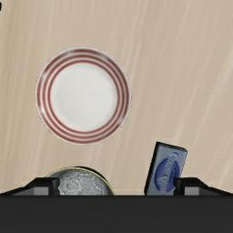
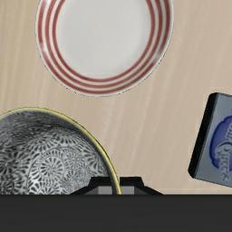
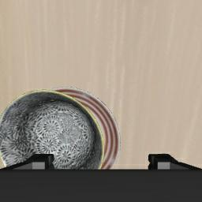
Figure 1.1 · What the two cameras see. Four moments from one recorded run in LIBERO. The run is 112 steps long, at 10 steps a second. The table camera looks at the whole scene from in front of the robot. The wrist camera moves with the hand, so once the gripper reaches the bowl, the bowl fills its view. The dataset keeps one picture from each camera at every step, each 256 by 256 pixels. The pictures are turned 180 degrees from what the simulator draws, and turns its test pictures the same way, so left and right are swapped compared with the picture at the top of the page. Frames: episode 379 of the physical-intelligence/libero dataset on Hugging Face, CC BY 4.0.
Next to the images goes the instruction as text, and often the robot's , the angles its motors report. Coming out are , numbers that tell the arm where to go.
Figure 1.2 · The control loop. The VLA turns pictures and a sentence into actions. The robot moves, the cameras take new pictures and the model is asked again, several times a second.
In LIBERO, the our project uses, one action is seven numbers. Three move the hand along x, y and z. Three turn it, and the last one opens or closes the gripper. Point at a group of numbers in the figure below to see which motion it controls.
Figure 1.3 · One action in LIBERO. Seven numbers per time step, in three groups. The values are made up to show the layout; a real model sends new ones at every step.
Robotics has a word for anything that maps what a robot senses to what it does next. It's called a , so a VLA is a policy that also reads language.
Go deeper
What goes in and what comes out
Clip · 4 min
From language model to VLA
Kevin Black of Physical Intelligence goes step by step from a language model to a vision-language model to a VLA, and says what goes in (images and an instruction) and what comes out (actions such as joint positions or speeds).
Karol Hausman and Kevin Black, “Building a Brain for Any Robot” · YouTube at 1:52
Our model
2 pictures + 1 sentence
That is everything the LIBERO version of π0.5 receives at each step. It gets no joint readings at all. Chapter 2 shows the setting in openpi's code that turns them off.
openpi config pi05_libero, checked 2026-11-11
Where the words go
The sentence is read by the same network as the pictures
The instruction is cut into tokens and fed in next to the image features. Whether the motion that comes out actually depends on those tokens is the question our project asks, in chapter 4.
Why start from a vision-language model
Robot data is expensive. Each training example is a , a recording of a person steering the robot through the task by hand, which is called . Every demonstration needs a person and a robot for as long as the task takes, so a single task might come with only 50 demonstrations, which is what each LIBERO task has. Figure 1.4 shows a robot set up to record them.
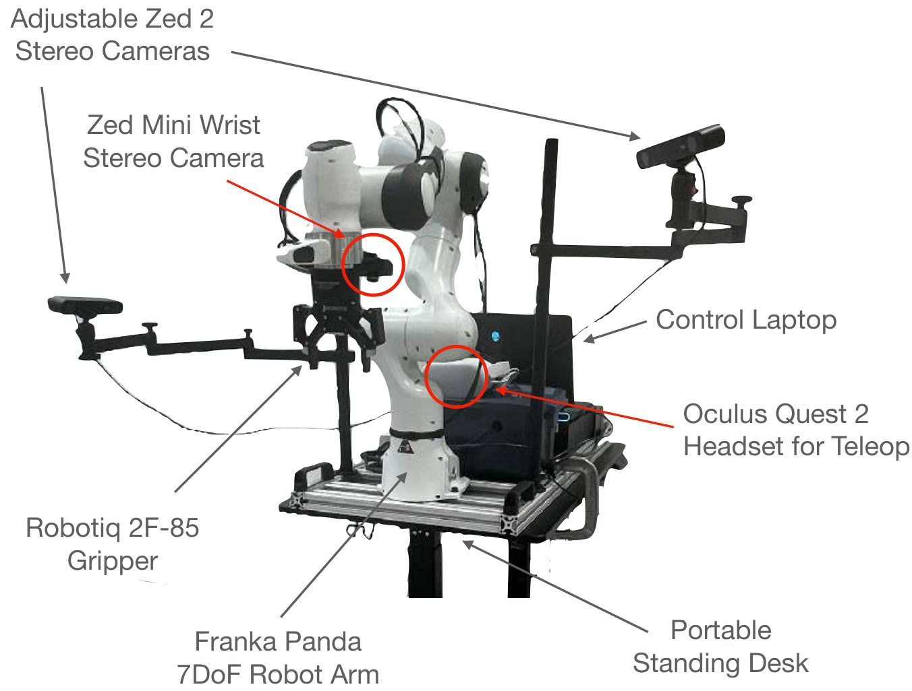
Figure 1.4 · A robot set up for teleoperation. This setup recorded DROID, a public dataset of real robot demonstrations. It is a Franka Panda arm, the model LIBERO simulates, with a camera on each side and one on the wrist. A person steers the arm with an Oculus Quest 2 VR headset and its hand controllers. The red circles mark the headset and the wrist camera. With 18 of these robots, 50 people at 13 institutions spent 12 months recording 76k demonstrations. Image: Khazatsky et al. 2024, DROID, Fig. 0, CC BY 4.0.
A (VLM) learns from something far cheaper, images paired with text and collected from the web by the billion. That's how a VLM such as knows what a bowl looks like and what the one on the left means. A VLA starts from a VLM and keeps training it on robot demonstrations, so the robot borrows that knowledge instead of learning it from 50 examples.
Figure 1.5 · Same network, new output. A VLA starts as a copy of a VLM. Training on robot demonstrations teaches it to answer with actions instead of words.
's (2023) made this idea widely known. (2024) was an open version with 7 billion , the adjustable numbers a network learns. (2024), from the company , is the family our project uses.
Go deeper
Why web knowledge helps a robot
Clip · 8 min
A Coke can on Taylor Swift's picture
Karol Hausman recalls RT-2 placing a can on a picture of Taylor Swift, though no robot data ever mentioned her. Kevin Black explains that web pretraining supplied the idea and robot training tied it to motion. The section then turns to π0's action expert.
Suraj Nair of Physical Intelligence describes π0 as PaliGemma plus a flow-matching action part, trained on more than 10,000 hours of robot data. A smaller model trained without the VLM's web pretraining did worse.
Sergey Levine explains how the first VLAs were made from multimodal language models, and how Open X-Embodiment pooled data from 34 labs and about 22 kinds of robot into one training set.
Sergey Levine, keynote “Robot Foundation Models” · YouTube at 1:45
Two ways to get actions out
A language model writes its answer one at a time, where a token is a word or a piece of one. The first way to get actions out treats them the same way. Each action number is cut into 256 bins, ranges of equal width, and the model writes the number of the bin as if it were a word. RT-2 and OpenVLA work like this. It's simple, but writing a long motion one token at a time is slow, and 256 bins are coarse for fine work.
The second way adds a smaller network next to the VLM, called an . It starts from random noise and refines it, in about ten steps, into a smooth run of real-valued actions. The method that learns this refinement is or its close relative . π0 and π0.5 work like this. Drag the slider under the right-hand panel to watch noise turn into a motion.
1 · ACTIONS AS TOKENS
2 · ACTION EXPERT
step 0 of 10
Figure 1.6 · Two ways out. Left, an action number becomes the token of its bin. Right, the action expert's ten refinement steps, simplified. The dashed line is the motion the model should end up with, and each point slides along a straight line from its noise towards it, which is the path flow matching is trained to follow. The real model has to work out that direction at every step from the images and the sentence.
Go deeper
Tokens and action experts
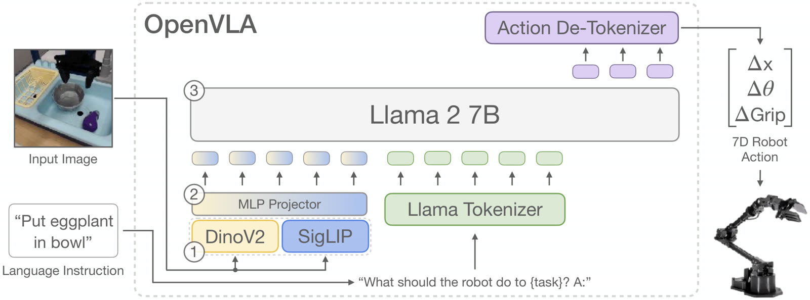
Figure · tokens
OpenVLA writes actions as tokens
An image and an instruction go into , which writes action tokens. A de-tokenizer turns each token back into its bin's value, giving a seven-number action.
Kim et al. 2024, OpenVLA, Figure 2 · CC BY 4.0
Clip · 5 min
Why add a separate part for motion
Sergey Levine contrasts early VLAs, which wrote coarse text tokens, with newer designs that add a separate part for smooth, continuous control, then shows π0 folding laundry.
Karl Pertsch goes from the Octo model to OpenVLA, explains why plain action tokens struggle on fast tasks, and shows how compresses a chunk before tokenizing it.
Karl Pertsch, “Unlocking Scalable Robot Learning” · YouTube at 13:45
Action chunks
Both kinds of model usually predict several future actions at once, called an . π0 predicts 50 steps ahead, and the LIBERO version of predicts 10. The robot runs some of them, the first 5 in the LIBERO evaluation script from openpi, then asks the model again with fresh images. Predicting ahead keeps the motion smooth, and asking again lets the robot correct itself.
model calledpredicted chunkstep the robot ranprediction thrown away
Figure 1.7 · Ten predicted, five run. Press Step to make one call. Gold cells are the chunk the model predicts, green cells are the steps the robot runs, and dashed cells are predictions it throws away when it asks again. At this rate a 220-step LIBERO episode takes 44 calls.
Go deeper
Why predict a chunk at all
Clip · 8 min
Chunks stop small errors from piling up
Max Simchowitz explains why predicting a sequence of actions can stop small imitation errors from compounding over a long task, and why long chunks can make a robot slower to react.
Kevin Black on slow inference: while the model computes, the scene changes, and real-time action chunking lets the robot keep moving while it plans the next chunk.
Running more of each chunk means fewer calls and smoother motion. Running fewer means the robot looks again sooner and can react to a surprise. The LIBERO script's choice, 5 of 10, sits between the two.
How a VLA learns
Training happens in three stages, laid out in figure 1.8. First the VLM learns from web images and text. Then the whole VLA learns from demonstrations recorded on many kinds of robot, such as the collection. Last, it is on the robot and the tasks it will be tested on, such as LIBERO.
In both robot stages the model learns by imitation, which is called . It sees a picture and an instruction from a recorded demonstration, guesses the action, and is corrected towards what the human operator actually did.
Figure 1.8 · Three stages of training. General knowledge comes first and the target tasks come last. In both robot stages the model learns by copying the operator.
Go deeper
Broad pretraining, then focused fine-tuning
Clip · from 4:34
Months of failure, then a recipe that worked
Chelsea Finn tells how the team's laundry-folding robot kept failing until they pretrained on broad robot data and then fine-tuned on consistent, carefully chosen demonstrations.
Chelsea Finn, “Building Robots That Can Do Anything” · YouTube at 4:34
Clip · from 8:55
π0's training recipe
Levine presents π0's data, from seven robot types, the web and Open X-Embodiment, and its recipe of about 10,000 hours of broad pretraining followed by smaller, curated sets for each task.
Open X-Embodiment's datasets per robot type, scenes, trajectories, skills and objects. Picking and moving dominate, and the Franka arm, the one LIBERO simulates, has the most scenes.
Open X-Embodiment Collaboration 2023, Figure 1 · CC BY 4.0
When the words don't matter
A common wrong belief
“A model trained on instructions must be reading them.”
Imitation only learns what helps it copy the demonstrations. Suppose every scene in the training data comes with exactly one instruction. Then the picture alone already tells the model which motion to make, so reading the words never lowers its training error, and nothing pushes it to use them.
Things change when one scene comes with several instructions. Now the picture can't tell the tasks apart, and only the words can. Figure 1.9 puts the two cases side by side.
EACH ARRANGEMENT HAS ONE INSTRUCTION
ONE ARRANGEMENT HAS THREE INSTRUCTIONS
Figure 1.9 · When the words matter. Left, each arrangement comes with one instruction, so the arrangement alone predicts the motion and the words (dashed) add nothing. Right, one arrangement comes with three instructions, so only the words decide.
LIBERO has suites of both kinds. Each picture in figure 1.10 is the first frame the table camera recorded in one run of a task, shown next to that task's instruction. Chapter 3 goes through the suites one by one.
LIBERO-SPATIAL · THREE TASKS, THREE ARRANGEMENTS
"pick up the black bowl in the top drawer of the wooden cabinet and place it on the plate"
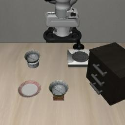
"pick up the black bowl on the ramekin and place it on the plate"
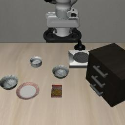
"pick up the black bowl from table center and place it on the plate"
LIBERO-GOAL · THREE TASKS, ONE ARRANGEMENT
"put the bowl on the plate"
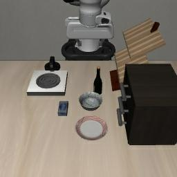
"put the bowl on the stove"
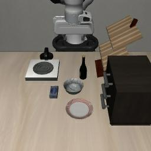
"turn on the stove"
Figure 1.10 · Both cases in LIBERO. In the three LIBERO-Spatial tasks, the two black bowls sit in different places each time, so the picture alone tells these tasks apart. In the three LIBERO-Goal tasks the table looks the same each time, and only the sentence says what to do. Not every Spatial task has its own arrangement, though: the tasks for the bowl on the stove and the bowl on the wooden cabinet start from the same one. Frames: first frames of episodes 1262, 1264, 1283, 379, 392 and 388 of the physical-intelligence/libero dataset, CC BY 4.0. Arrangements: LIBERO's task files.
What this means for our project
A VLA can score near 100% on a benchmark while ignoring the instruction, as long as the benchmark never shows the same scene with two different instructions. That is the root of our question. Chapter 3 shows where LIBERO does this and where it doesn't, and chapter 4 turns it into tests.
Check yourself
What goes into a VLA at each step, and what comes out?
Show answer
Camera images, the instruction text and often the robot's joint readings go in. A chunk of future actions comes out, each one a few numbers for the arm and gripper.
A model predicts 10 actions per call and the robot runs 5 before calling again. How many calls does a 220-step episode take?
Show answer
44 calls, because 220 ÷ 5 = 44.
Which of the two ways to get actions out does π0.5 use, and what does it start from?
Show answer
An action expert trained with flow matching. It starts from random noise and refines it in about ten steps into an action chunk.
Why could a VLA trained on 40 instructions still ignore language? Say it in your own words.
Show answer
It learns by copying demonstrations. If each scene in training appears with only one instruction, the image alone predicts the actions, so reading the words never lowers the training error and nothing pushes the model to use them.
Sources
Brohan et al. (2023), RT-2: Vision-Language-Action Models Transfer Web Knowledge to Robotic Control. arXiv 2307.15818
Kim et al. (2024), OpenVLA: An Open-Source Vision-Language-Action Model. arXiv 2406.09246. Figure 2 reused under CC BY 4.0.
Black et al. (2024), π0: A Vision-Language-Action Flow Model for General Robot Control. arXiv 2410.24164
Open X-Embodiment Collaboration (2023), Open X-Embodiment: Robotic Learning Datasets and RT-X Models. arXiv 2310.08864. Figure 1 reused under CC BY 4.0.
Liu et al. (2023), LIBERO: Benchmarking Knowledge Transfer for Lifelong Robot Learning. arXiv 2306.03310. LIBERO-Goal figure reused under CC BY 4.0.
Khazatsky et al. (2024), DROID: A Large-Scale In-The-Wild Robot Manipulation Dataset. arXiv 2403.12945. Fig. 0 reused under CC BY 4.0; the counts in figure 1.4 are from its abstract and introduction, checked 2026-11-11.
physical-intelligence/libero, the LIBERO dataset that openpi's pi05_libero trains on (CC BY 4.0). Camera frames from episodes 379, 388, 392, 1262, 1264 and 1283, checked row by row on 2026-11-11. huggingface.co/datasets/physical-intelligence/libero
LIBERO task files, libero/libero/bddl_files/libero_spatial/: the starting arrangement of each Spatial task, checked 2026-11-11. github.com/Lifelong-Robot-Learning/LIBERO
openpi, examples/libero/main.py (replan_steps = 5) and the pi05_libero config (action_horizon=10, discrete_state_input=False), checked 2026-11-11. github.com/Physical-Intelligence/openpi